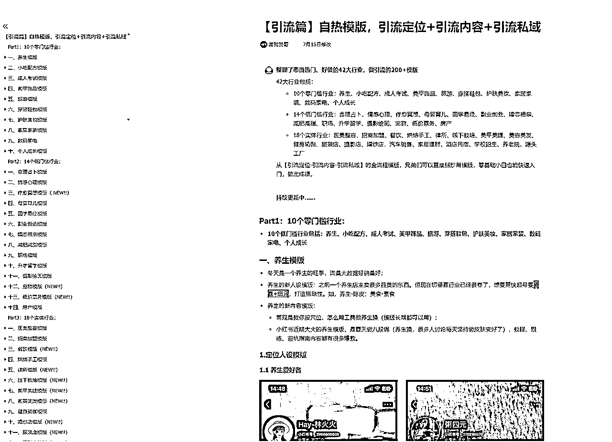
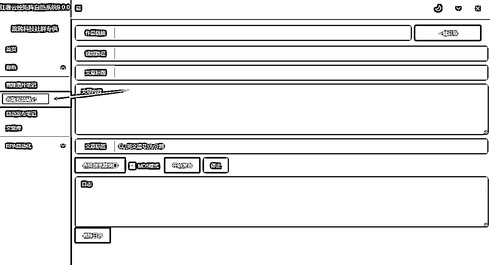
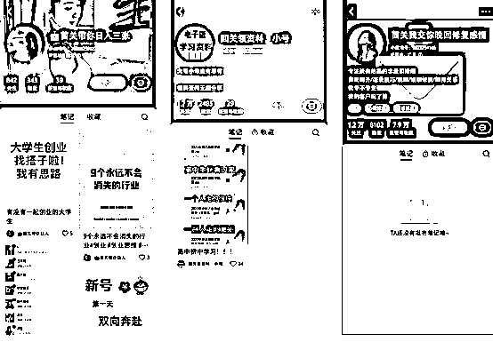
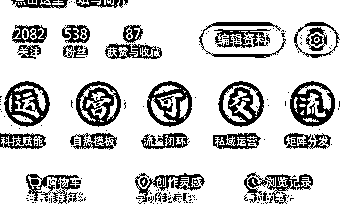
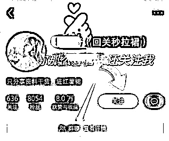
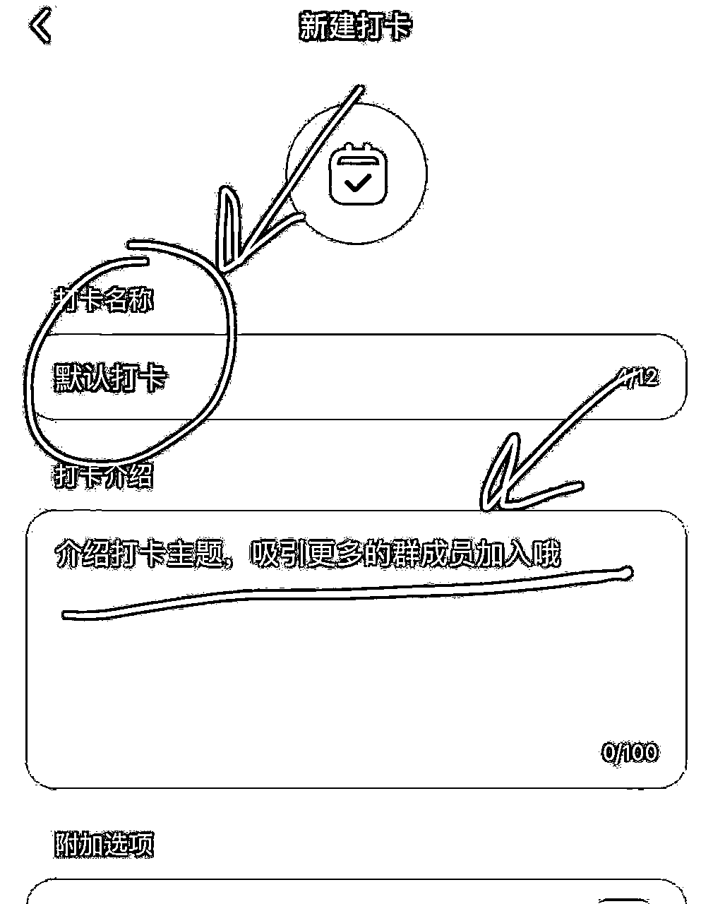

来源：https://thctbhym4b.feishu.cn/docx/PeHPdxIPvoEHEwxQ32ucCNOHnJg
大家好，我是阿鹏，专注私域引流。
今天给大家整理了一份小红书自热截流的全链路打法，适合全行业。
目前小红书比较主流的有2种打法：
自热：就是你平时正常在平台发作品，跑流量。
截流：截取别人自热产生的流量，常见的有评论区下钩子截流，主页留钩子点赞，管住，@留痕等等。
安卓：适合小团队截流、或者自热，推荐用红米8以上
苹果：适合自热团队
1）厅卡，3大营业厅的卡都可以，尽量不要用广电的
2）拦截号，这种是属于违规的，不要用
3）四方号，适合做截流，价格比较便宜
4）老美+港号，苹果机自热可用，安卓用起来比较麻烦
1）手机卡，厅卡 2）流量卡 3）物联卡 4）注册卡
1）厅卡
怎么用都可以，但是不要多台手机连1个wifi
2）wifi
可用做有价值的内容，不玩废号流，不要多台手机连一个wifi
3）物联卡流量卡
自热截流都可以
4）软路由
一般大型团队会用，一个场地可以开出几十个不同IP
模板主要分价值输出型和暴力废号型。
这种不用多解释，平时我们在小红书上刷到的，作图精致、里面有干货的，就属于价值输出型。
而封面和内容，简单粗暴，跟你路边收到的广告传单一样感觉的，就属于暴力型模板。
大家都可以根据自己的行业去整理！
我这里也整理了市面热门、好做的42大行业，做引流的200+模版
42大行业包括：
从【引流定位-引流内容-引流私域】的全流程模版，兄弟们可以直接照抄用模版，零基础小白也能快速入门，做出成绩。

一两个号我们正常去发就可以了，如果是想矩阵去发，就需要用到工具。
之前我们批量搞都用的是红薯克隆工具，可能不少兄弟也知道。不过有些缺陷就是只能克隆图文，最近的话也是刚出来一款可以克隆视频的工具，可以一键克隆视频，矩阵分发。

目前截流的方法主要是通过评论区、私信、点赞、收藏、关注曝光来实现。
截流需要多准备点设备，设备不多还是建议去打自热，而且需要一机一卡一IP
设备也要干净，还有就是可以跑曝光的软件，这种的很多，大家可以去找。
截流就是废号流，红薯账号也不值钱，自己算好利润点就可以
钩子一定要设置好，一个好的钩子能让你的效果翻倍

导流只是手段，内容够吸引人，别人自然会想方设法找到你的钩子
1.主页引导

2.背景图引导
注意不要有违规词，如果红薯与微信同号，可以用箭头指向小红书号，略加说明。
比如下图箭头可以指向群聊、红薯号

3.直接发语言念微信
不用自己念，用ai配音，可男可女，可以选多种风格，可用方言，多弄几个，每次手机发语言的时候就点一下播放
这类小程序挺多，就不做推荐了
4.笔记跳转加微图片
目前我们主要用这个，直接跳转图片可以自定义分享页面和跳转内容，这个可以直接用小号在群里发
5.群里打卡

大概流程就是这样，欢迎大家链接交流，vx：w0222168 一起生财有术！